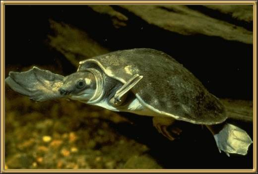

Well, it's very easy to see how this turtle came across
its name! Having seen one their nose is remarkably like that of a pig!
They're also known as Warrajans. They were only discovered in 1969 and are
considered to be rare.
Photographer: Unknown